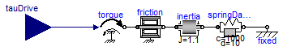

FMITest.Initialization.MixedSystems.InertiaWithFrictionAndSteadyState.FMUModels.FrictionInertia
FMITest.Initialization.MixedSystems.InertiaWithFrictionAndSteadyState.FMUModels.FrictionInertia
For all models in this package an FMU must be generated
Extends from Modelica.Icons.Package (Icon for standard packages).
| Name | Description |
|---|---|
| FrictionInertia | Input/output block of an inertia with friction |
FMITest.Initialization.MixedSystems.InertiaWithFrictionAndSteadyState.FMUModels.FrictionInertia
Input/output block of an inertia with friction

Extends from Modelica.Blocks.Interfaces.BlockIcon (Basic graphical layout of input/output block).
| Type | Name | Description |
|---|---|---|
| input RealInput | tauDrive | Accelerating torque acting at flange (= -flange.tau) |